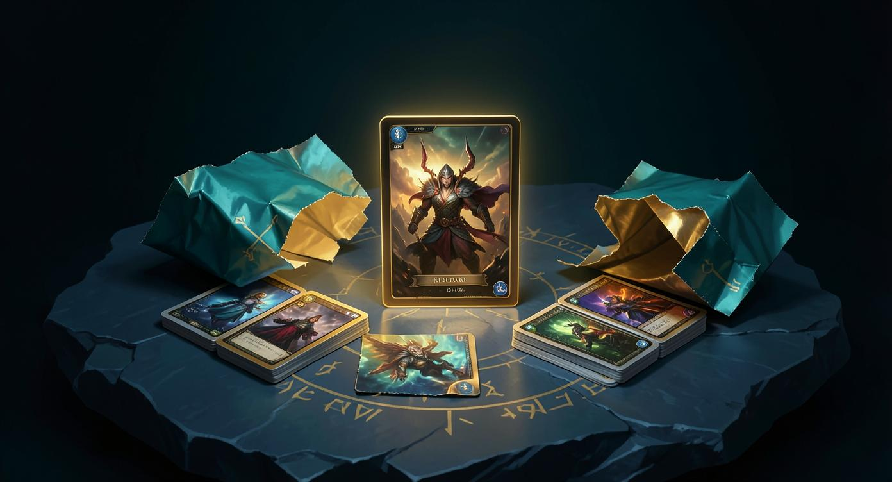

1 vs 1

Sesenta cartas, un comandante
Brawl
El formato corto: sesenta cartas sin repetidas y un comandante siempre a mano en la zona de mando. Partidas rápidas, con la misma tensión que el Commander de verdad.
- 60 cartas
- 30 vidas
- 21 de daño de comandante
Jugar Brawl →
Formato completo

Cien cartas, un comandante
Commander
Cien cartas únicas, el comandante en la zona de mando y veintiún puntos de daño de comandante como sentencia. El formato largo, con más margen para montar la mesa.
- 100 cartas
- 40 vidas
- 21 de daño de comandante
Jugar Commander →
Sobres

Dos sobres, un capitán
Captain Jumpstart
Abres dos sobres de veinte cartas, los mezclas en un mazo singleton de cuarenta y eliges una criatura como capitán. El mazo se arma solo; tú decides a quién mandas.
- 2 × 20 cartas
- 40 singleton
- 20 vidas
Jugar Captain →